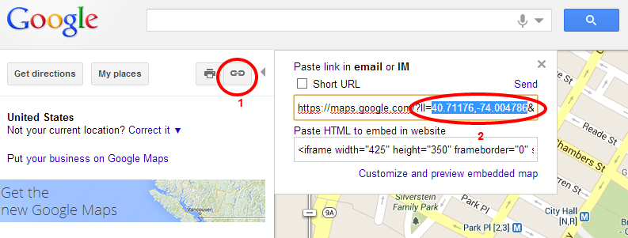

- Created: 10/30/2014
- Last Update: 10/30/2014
- By:
- Email: support@creaws.com
Thank you for purchasing our template. If you have any questions that are beyond the scope of this help file, please feel free to contact us. Thanks so much!
Please note: for questions on basic HTML, JavaScript or CSS editing - please give your question to Google or visit W3Schools. You will need some HTML/CSS knowledge to edit this template.
HTML Structure
Clinico template has a fixed layout with up to twelve columns. All the information within the main content area is nested within a div. The general template structure is the same throughout the template.
If you would like to edit the color, font or style of any element on the site please find the element's class or ID and locate where it is being controlled in style.css.
If you find that your new style is not overriding, it is most likely because of a specificity problem. Scroll down in your CSS file and make sure that there isn't a similar style that has more weight.
CSS Files and Structure
We're using multiple CSS files in this template. Those files also contain some general styling, such as anchor tag colors, font-sizes etc. Keep in mind that these values might be overridden somewhere else in the files below:
- style.css - main css file (included reset styles);
- crscheme.css - current color css file;
- font-awesome.css - Font Awesome 4.0.3 css file;
- layerslider.css - the Layer Slider styles;
- jquery.fancybox.css - contain the styles for FancyBox script;
- owl.carousel.css - contain the styles for Owl Carousel;
- color-blue.css, color-cyan.css, color-green.css, color-orange.css, color-pink.css, color-purple.css - template color stylesheets;
Please note: Clinico includes 6 main colour variations (Blue, Cyan, Green, Purple, Pink and Orange) which are located in one folder "css". To activate another then the default color scheme we need to rename the appropriate color css file to "crscheme.css".
At first glance, the CSS may look confusing, let me explain each below:
Main CSS Files
- style.css - This is the main CSS file that controls nearly everything on the site.
- font-awesome.min.css - contains FontAwesome stylesheet;
- jquery.fancybox.css - FancyBox CSS, you don't need to edit this file
- layerslider.css - the Layer Slider css stylesheet.
Handy CSS Classes:
.clearfix - A quick way to clear floated HTML elements
.top-link - Use this button to smoothly scroll to the top of a page.
.left - Float item to left
.center - Center item
.right - Float item to right
style.css file contains specific styling for the page. The file is separated into sections using:
-- General -- fonts -- COMPOSER -- defaults -- forms -- buttons -- page -- grid -- typography -- clearfix -- Plugins -- isotope -- owl carousel -- HEADER -- layout -- logo -- main nav -- mobile main nav -- quick search -- CONTENT -- layout -- page title -- slider -- benefits -- services -- news -- photo tour -- Services Carousel -- Features unlimited color -- page-404 -- Retina ready and responsive -- captcha -- blog post -- comments -- add comment -- doctors -- doctors carousel -- timetable -- map -- feedback -- ELEMENTS -- text -- accordion -- buttons -- callout -- capitalized -- chart graph -- dividers -- icons -- messages -- milestone -- pricing table -- progress bar -- services -- news -- location -- recent posts -- work time -- copyrights -- ANIMATIONS -- slide up
Template customization
Color scheme & Layout type:
-
With the help of Style Switcher (see the picture below) please choose a suitable color scheme for your website. Let's choose the pink one as example.

- Now we need to apply this color scheme and activate it. Just open the "css" folder of your template and find the appropriate .css file (in our case it's called "color-pink.css"). After doing this we need to rename the current "crscheme.css" file to "crscheme_old.css" then rename "color-pink.css" to "crscheme.css".
-
In case of applying the boxed layout we need to add "page-boxed" class to the main div of each html page:
- That's all, your new color scheme and page layout are setup and applied to all html files!
Fonts and text colors:
- Choose the needed font for your main menu or content. (for example we can choose any font from google fonts: http://www.google.com/webfonts#ChoosePlace:select)
- Let's choose Happy Monkey font as example.
-
All you need to do is import the font at the beginning of the style.css file:
@import url(http://fonts.googleapis.com/css?family=Happy+Monkey);
and edit the according class or ID.
In case of changing the main menu font, we need to find and edit this class: ".main-nav".main-nav { position: absolute; top: 0; right: 50%; margin-right: -585px; font:400 14px/1.5em 'Happy Monkey', sans-serif; }add this line "font:400 14px/1.5em 'Happy Monkey', sans-serif;".
The same steps we should take to change fonts for the headings or any other template sections;
LayerSlider setup:
We're using LayerSlider plugin in this template. The manual for this slider is located here.
Email setup for contact form:
-
Our Clinico template includes working contact form. To change the email address so that all messages would come to your email we'll need to edit just
one file called "contact-send.php" at line 10 which is located in the "php" folder:
$ourMail = "your_email@mail.com";so, instead of "your_email@mail.com" just input your email address and upload the file to your host. That's all! The contact form and under construction page will send all inquiries to your email address.
Twitter setup:
-
Now we're ready to go forward and change the Twitter user ID.
1. The first thing that you will need is a Twitter account. Note that the account that you create need not be the one that you are retrieving status updates (tweets) from.
2. Go to http://dev.twitter.com and login with your developer account, or your new, regular account. If you are doing the latter, Twitter will automatically create a developer account for you from your regular one.
3. Hover over your username (upper right) and click "My Applications".
4. Click "Create a new application" and enter the necessary information. For the "Callback URL", enter the URL of the website on which you will be using this plugin. NOTE: the "Callback URL" is optional and is only necessary if you plan to use callbacks.
5. Once your Application has been created, click on "Create my access token", at the bottom of the "Details" tab on the application's page.
Please note: there's a nice article showing the above steps with screenshots: http://bit.ly/1dc3veA. So, it might be helpful if you find the above steps a little complex.
6. Now, when you have all the keys, secrets and tokens necessary for using Twitter plugin, open the "scripts.js" (located in the "js" folder) and find the section "// twitter". Here you will find a twitter block, which contains the Twitter ID. Just replace the "username:ID" with your twitter ID. Then you need to open the "\twitter\index.php" file and edit the "config" section filling in the following fields: $consumer_key, $consumer_secret, $user_token, $user_secret with your own twitter access keys.
Be careful while setting up the above keys and tokens. Wrong values might block the whole scripts.js file which is used throughout the whole template.
!!!Please don't forget to upload the "index.php" file to your host after you save all changes.
Google Map setup:
Google Map setup is a very easy process.All you have to do is to edit the "js/scripts.js" file at the "google map" section:
/**/ /* google map */ /**/ function init_map() { var coordLat = -37.81261128155935; var coordLng = 144.96260404586792; if( jQuery(window).width() < 756 ) { delta = 0; } var point = new google.maps.LatLng(coordLat,coordLng); var center = new google.maps.LatLng(coordLat,coordLng); var mapOptions = { zoom: 15, center: center, scrollwheel: false, mapTypeId: google.maps.MapTypeId.ROADMAP } var map = new google.maps.Map(document.getElementById('map'), mapOptions); var image = 'images/gmap_default.png'; var beachMarker = new google.maps.Marker({ map: map, position: point }); }Just edit the "coordLat = -37.81261128155935;" and "coordLng = 144.96260404586792;" values to show your location. These values may be found under the "Short URL" field:
Now you need to save the scripts.js file and upload it to your host.
In case of customizing the map please refer to this article: https://developers.google.com/maps/tutorials/customizing/styling-the-base-map
That's all, your google map is setup and ready to use!
JavaScript
This template imports the following Javascript files. You can get more script info when clicking the appropriate link:
- scripts.js - main js file.
- jquery.fancybox.pack.js. Refer to the author's documentation for additional notes on how to use it.
- jquery.isotope.min.js Refer to the author's documentation for additional notes on how to use it.
- owl.carousel.min.js Refer to the author's documentation for additional notes on how to use it.
- jquery.ui libraries Refer to the author's documentation for additional notes on how to use it.
- jquery.min.js (jQuery v1.10.2) Refer to the author's documentation for additional notes on how to use it.
PSD Files
We've included some PSD files to make the re-design process a bit easier.
Please check the PSD folder for all included PSD files.
Credits
We've used the following images, icons and other resources as listed.
- FancyBox - jQuery Plugin - http://fancyapps.com
- jQuery - www.jquery.com
- Maps - Maps.Google.com used in live demo
Once again, thank you so much for purchasing this template. We'll be glad to help you in case of having any questions relating to it. We'll do our best to assist.